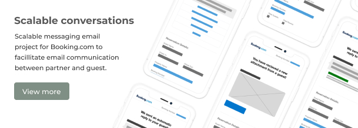
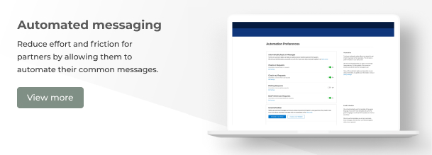
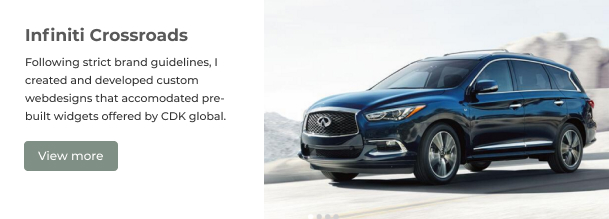
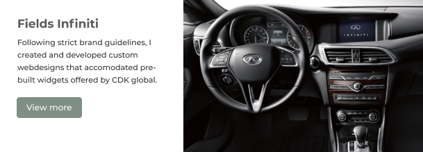

Originally, I come from Seattle but I'm currently based in Amsterdam. Over the last 8 years I’ve accumulated a range of skills as a multidisciplinary designer and worked on products in the both the B2B and B2C space. The projects that get me most excited are ones where I get to dabble in the whole process from research all the way through to toasting champaign after launch! I love to create solutions that solve user problems that ultimatly bring the business and our users closer together.
Since September 2020, I've been designing internal and external tools to help facilitate the flow of money throughout the payment lifecycle and working on brand new pillars to help bring Adyen to new markets.
Most of my work at Adyen is under NDA, but this is what I can share.
Between 2017 and 2020, I was responsible for idea generation and exploratory user research, UI design and concept validation at Booking working on B2B and B2G products. Keeping the user at the center of everything I do, I deliver solutions to complex user problems across multiple platforms.
 In 2016 and 2017, I was creating marketing websites for car dealerships across america while upholding OEM guidelines and integrating complext CDK tooling to create the best shopper experience for new cuy buyers.
 